地政学
ブカレストは黒海、ドナウ、カルパチアの間で、欧州連合と北大西洋同盟の東縁を支える首都です。官庁、大使館、空港、軍事同盟、モルドバやウクライナ情勢への視線が都市の日常に重なります。安全保障の現場です。
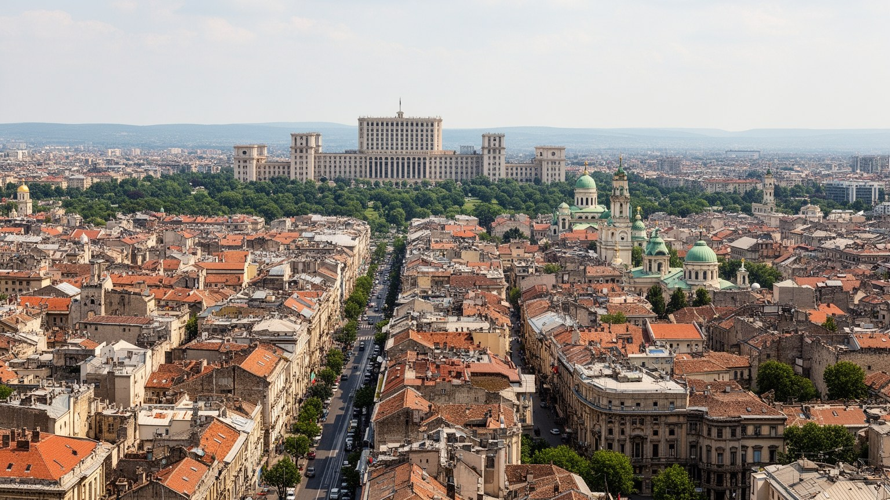
🇷🇴 ルーマニア / ヨーロッパ / World City Atlas
ワラキアの都、王国の首都、社会主義期の巨大改造、EU時代のITと金融が重なる都市です。壮麗さと傷、賑わいと不安定な生活が同じ通りにあります。
都市の骨格
ブカレストはドゥンボヴィツァ川と湖沼の低地に広がり、旧商業地、正教会、社会主義期の大通り、巨大な議会宮殿、郊外団地、新しいオフィスを重ねます。首都の富と生活の不安が近くにあります。
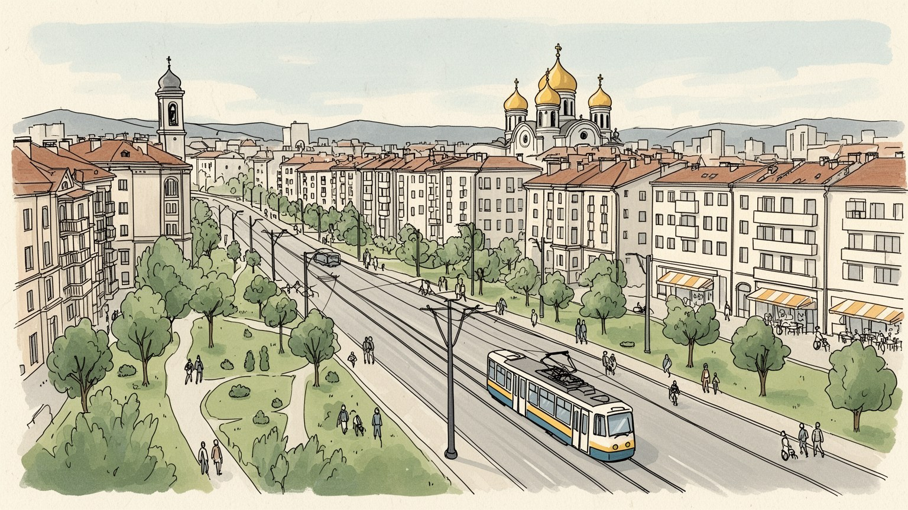
ブカレストは黒海、ドナウ、カルパチアの間で、欧州連合と北大西洋同盟の東縁を支える首都です。官庁、大使館、空港、軍事同盟、モルドバやウクライナ情勢への視線が都市の日常に重なります。安全保障の現場です。
行政、情報技術、金融、建設、不動産、物流、大学が雇用を広げます。一方で清掃、警備、飲食、配送、介護の仕事は低賃金も多く、郊外通勤と住宅費が成長都市の緊張を生みます。格差も映す生活都市です。課題です。
正教会の暦、教会、修道院、劇場、映画、文学、ロマ音楽、ユダヤ人とアルメニア人の記憶が重なります。信仰と文化は観光の飾りではなく、家族行事と追悼を支える力です。街の芯でもある都市です。今日の倫理も問います。
住民の日常は地下鉄、トラム、団地、市場、公園、カフェ、冬の暖房費にあります。観光は旧市街や巨大宮殿へ向かうが、都市の読み方は通勤、住宅、緑地、地震リスクにも広がります。生活の課題がよく見えます。身近です。
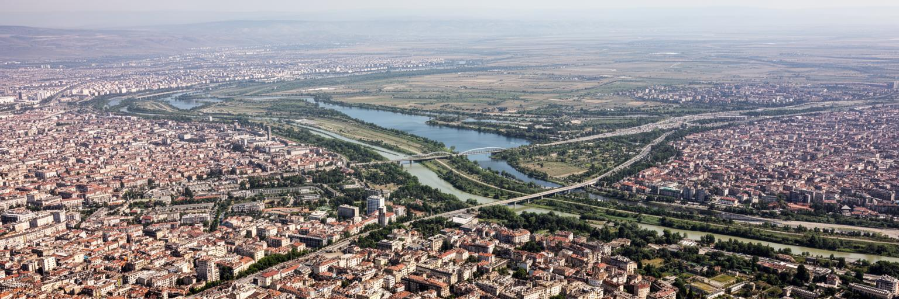
ブカレストはルーマニア南東部のワラキア平原にあり、ドゥンボヴィツァ川とコレンティナ川沿いの湖沼を抱えながら広がります。山でも海港でもないこの位置は、ドナウ、黒海、カルパチア、モルドバ方面を結ぶ内陸の結節点として首都を育てました。街は大河の港ではありませんが、鉄道、幹線道路、空港を通じて国内各地と欧州東部を束ねます。平坦な地形は大通りや団地の拡張を容易にした一方、湿地の改変、排水、夏の暑さ、冬の霧を都市問題にしました。中心部では旧市街、政府庁舎、大学、銀行、ホテルが近く、少し離れると湖畔の公園、巨大な集合住宅、工業跡地、新しいオフィスが現れます。ブカレストを読むには、絵になる旧市街だけでなく、平原の広がりが作った道路の距離、郊外通勤、空港アクセス、災害時の避難を同時に見る必要があります。首都の位置は地図の中心性だけでなく、東欧の安全保障、黒海地域、バルカンと中欧の間でルーマニアがどの方向へ開くかを示しています。低地の広さは都市を伸ばす余地を与えたが、拡散した住宅地を公共交通で結ぶ難しさも生みました。湖と川は涼しさと景観を与える反面、護岸、排水、水質、緑地保全を日常の行政課題にします。地形は静かな背景ではなく、首都の移動時間、投資の方向、生活の負担を決める条件です。だから都市の輪郭は、中心だけでなく周縁の移動からも見えてきます。
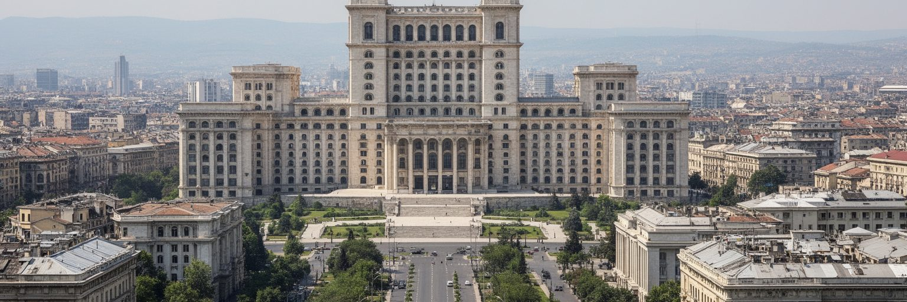
ブカレストは大統領府、議会、政府、省庁、憲法裁判所、政党本部、外国大使館が集まる国家政治の舞台です。とくに議会宮殿は、社会主義期の権力が都市空間に刻んだ巨大な記号として、観光名所であると同時に政治的な重さを持ちます。ルーマニアは欧州連合と北大西洋同盟の加盟国であり、黒海地域、モルドバとの関係、ウクライナ戦争後の安全保障、エネルギー、移民、司法改革が首都の議論に入ります。広場では汚職、司法、賃金、医療、教育をめぐる抗議が繰り返され、国家権力と市民社会の距離が可視化されてきました。外交都市としてのブカレストは派手な国際機関都市ではありませんが、東欧の境界に近い首都として、同盟、軍事基地、港湾、鉄道、難民支援を結ぶ実務を担います。政治を読む時は、壮大な建物の威圧感だけでなく、その前を通勤する人、行政窓口で待つ人、デモへ集まる人を同じ視界に入れたいものです。首都の権威は、建物の大きさではなく、制度が住民の生活をどれだけ支えるかで測られます。選挙、司法制度、報道の自由、汚職対策をめぐる議論は、抽象的な制度論ではなく、病院の質、学校予算、道路工事、公共調達の透明性として街へ返ってきます。首都の政治は国民国家の物語と、住民が毎日受ける行政サービスの両方を映します。市民の信頼が弱まれば、どれほど大きな庁舎も都市を支えられません。
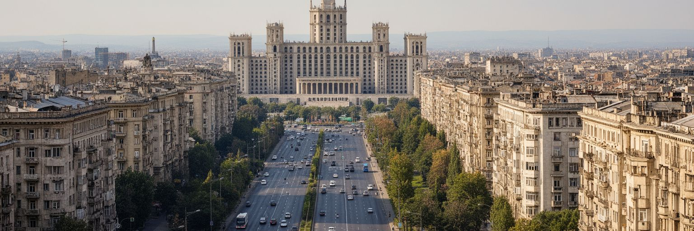
ブカレストの都市景観を決定的に変えたのは、ニコラエ・チャウシェスク時代の大規模な都市改造です。議会宮殿と統一大通りを中心にした計画は、国家の威信を示す巨大な軸を作る一方、歴史的な街区、教会、住宅、路地、墓地、近隣関係を大量に壊しました。地震対策や近代化の名目もあったが、実際には権力が都市を自分の舞台として作り直す暴力でもありました。移築された教会、取り残された古い家、広すぎる大通り、単調なファサードは、その過程の複雑な痕跡です。現在の住民は、その空間を通勤、行政、観光、イベント、日常の背景として使い直しています。巨大建築を単に奇観として眺めるだけでは、失われた地区の生活は見えません。どこに商店があり、どこに家族が住み、どの教会が移されたのかを重ねると、都市改造が記憶と所有をどう断ち切ったかが分かります。同時に、現在のブカレストはその傷を抱えたまま、新しい公共空間や文化利用を模索しています。都市の評価は、権力の記念碑をどう生活の側へ引き戻せるかにもかかっています。広場や大通りを歩ける場所へ変える試み、建物の一部を文化や行政に開く工夫、消された地区を記録する展示は、過去を消すのではなく扱い直す方法です。都市改造の傷は、住民が語れる記憶として残されて初めて公共性を持ちます。失われた路地の名を思い出す作業も、都市を回復する小さな実践です。
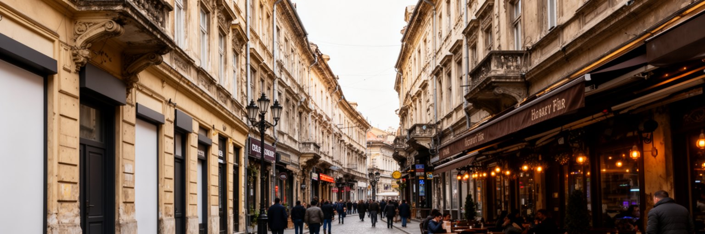
リプスカニを中心とする旧市街は、商人、職人、銀行、宿屋、教会が集まったブカレストの歴史的な商業核です。長い劣化と空洞化を経て、近年は修復された建物、レストラン、バー、ホテル、ナイトライフが増え、観光客が最も歩きやすい地区になりました。石畳や中庭、古い教会、商業建築は、王国期の都市文化とバルカン的な雑多さを伝えます。しかし再生はいつも生活を豊かにするとは限りません。飲食店の集中、深夜の騒音、短期滞在向けの改装、家賃上昇は、住民や小規模な日用品店を押し出します。旧市街の魅力を保つには、外観をきれいにするだけでなく、耐震補強、防火、歩行者空間、清掃、文化施設、住民向けサービスを合わせて考える必要があります。観光客が食事を楽しむ通りの裏には、働く人の長時間労働や低賃金もあります。ブカレストの旧市街を読むことは、失われかけた都市中心を取り戻す過程と、それが消費空間へ偏る危うさを同時に見ることです。歴史の厚みは、夜の賑わいだけでなく、昼の市場、教会の静けさ、修復を待つ建物にも残ります。建物の上階に住む人、配達車が入る時間、消防車が通れる路地、雨の日の排水まで見ると、旧市街は舞台装置ではなく管理の難しい生活空間だと分かります。観光の収益を保存と住民サービスへ戻せるかが、再生の質を決めます。昼と夜の使われ方の差も、この地区の課題をはっきり見せます。
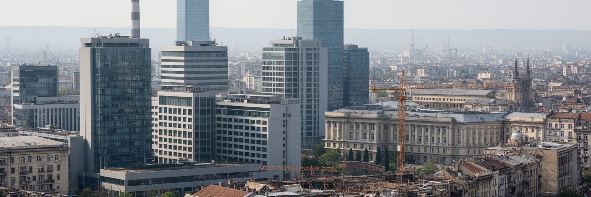
ブカレストの経済は、首都行政だけでなく、情報技術、通信、金融、保険、法律、会計、不動産、建設、大学、医療、文化産業によって支えられています。多国籍企業の拠点やアウトソーシング、ソフトウェア開発、ゲーム、サイバーセキュリティは、英語を使う若い専門職を引き寄せました。EU加盟後の投資と国内市場の集中により、ブカレスト・イルフォヴ地域はルーマニア経済の大きな比重を持ちます。一方で、この成長は労働市場を二層化します。高所得の技術職や金融職がオフィス街で働く一方、清掃、警備、建設、飲食、配送、介護、コールセンターの仕事は不安定で、賃金が住宅費に追いつかないことも多いです。地方から来る学生や若者には機会がありますが、家賃、通勤、保育、医療へのアクセスが都市生活の壁になります。建設ブームは住宅とオフィスを増やすが、公共交通や緑地、学校を伴わなければ生活の質を下げます。ブカレストを経済都市として読むには、成長率やオフィスの外観だけでなく、誰がその成長を支え、誰が中心部に住めなくなるのかを問う必要があります。高度人材を集めるには大学、通信環境、国際空港だけでなく、手頃な家賃、保育、医療、夜間交通も必要になります。企業の利益が地域の税収、技能訓練、公共空間へ返る仕組みが弱ければ、首都の成長は分断を深めます。経済の強さは、働く人が暮らし続けられる条件で試されます。
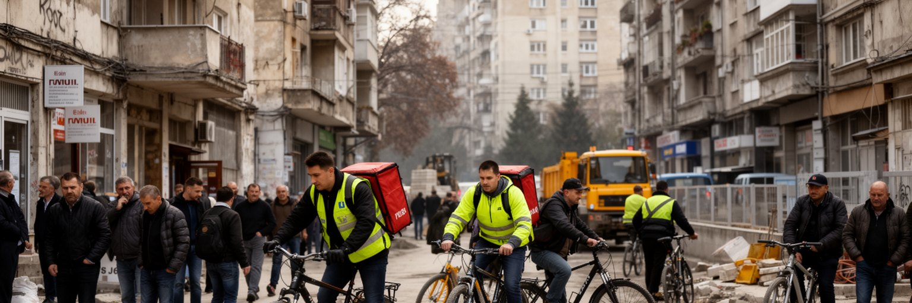
ブカレストには国内各地から仕事、大学、医療、行政手続きのために人が集まります。首都の賃金は高いが、生活費も高く、地方との格差は都市の人流を強めています。若い専門職はITや金融で上昇の道を描ける一方、建設、清掃、警備、飲食、配送、介護の労働者は長時間勤務や不安定な契約に直面しやすいです。ルーマニアから西欧へ働きに出る人も多く、家族の分離、送金、技能流出、医療人材不足は首都にも影を落とします。逆に周辺国やアジアからの労働者も増え、言語、在留資格、住まい、差別の問題が現れます。ロマ住民への偏見、貧困地区、非公式な住まい、学校や医療へのアクセスも、都市の見えにくい課題です。繁華街の明るさや新しいオフィスだけを見ると、こうした社会問題は背景に押し込まれます。しかし都市は、弱い立場の人がどれだけ移動し、学び、働き、住めるかで評価されます。ブカレストの成長を読むには、統計の上昇と同じ重さで、夜勤明けのバス、家賃の支払い、保育園の空き、病院の待ち時間を見なければなりません。社会問題は周縁の話ではなく、中心部のレストラン、工事現場、病院、学校を動かす労働と結びついています。包摂が弱い都市では、人手不足と不信が同時に広がるため、福祉、教育、雇用監督は経済政策そのものになります。人の移動を支える制度の細部に、首都の公平性が表れます。
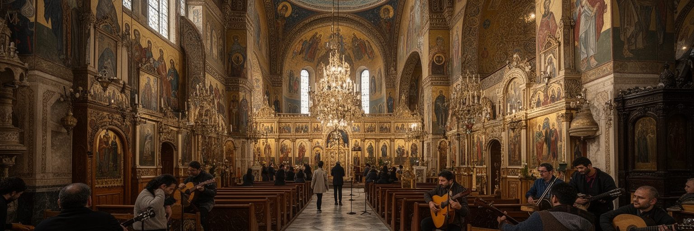
ブカレストの宗教的な基層にはルーマニア正教会があり、教会、修道院、聖人暦、復活祭、葬儀、結婚式、施しの習慣が都市生活に深く入り込みます。大通りの間に残る小さな教会は、巨大な国家建築とは別の時間を保ち、家族や近隣の記憶を支える場所です。同時にブカレストには、ユダヤ人、アルメニア人、ギリシャ人、ドイツ人、ハンガリー人、ロマなど、多様な共同体の痕跡があります。ユダヤ人のシナゴーグや墓地、ホロコーストの記憶、アルメニア教会、ロマ音楽と差別の歴史は、都市を単一民族の物語に閉じ込めません。宗教は観光の美しい建築だけでなく、誰が安全に祈れるか、どの共同体の記憶が公共空間に残るかという問題でもあります。社会主義期の抑圧と都市改造は多くの宗教施設を傷つけたが、一部は移築され、住民の努力で守られました。ブカレストを読むには、正教会の鐘と同時に、失われたユダヤ人地区、差別されてきたロマの生活、移民の礼拝空間を重ねて見る必要があります。信仰は建物ではなく、都市が多様な記憶を受け止める力として現れます。宗教施設は慈善、教育、葬送、食の配慮、孤独な人への支援にも関わります。都市が急速に変わるほど、祈りと追悼の場所は、住民が自分の来歴を確かめる静かな拠点になります。少数者の記憶を残す姿勢も、現在の共生を測る基準になります。
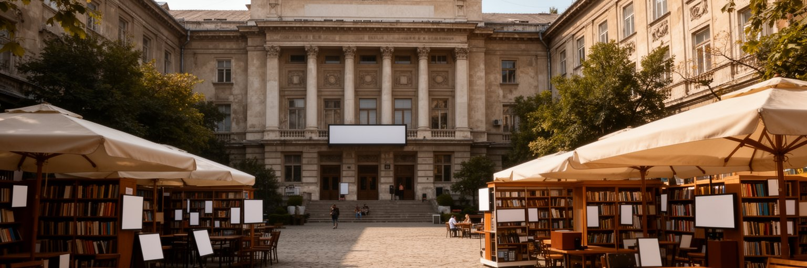
ブカレストはルーマニアの文化と教育の中心でもあります。大学、研究機関、劇場、国立美術館、映画館、出版社、独立系書店、音楽クラブ、現代アートの小さな空間が、政治首都とは別の公共性を作ります。十九世紀から二十世紀前半にかけての建築やカフェ文化は「小パリ」と呼ばれた都市像を生んですが、そのイメージは戦争、社会主義、移行期の荒廃、再開発を経て複雑に変わりました。現在の文化は、古い劇場や音楽ホールだけでなく、廃工場のイベント、学生の映画、電子音楽、ロマの演奏、デザイン、文学祭にも広がります。夜の旧市街は観光消費の場として賑わうが、文化の厚みは深夜営業の店だけでは測れません。誰が練習場所を持ち、誰がチケットを買え、誰の言葉や経験が舞台に上がるかが重要です。大学は全国から若者を集め、社会の上昇経路を作る一方、学費、家賃、就職、国外移住の選択に揺れます。ブカレストの文化を読む時は、華やかな建物と同時に、若い表現者、翻訳者、教師、舞台裏の技術者、夜の交通を支える人まで視野に入れたいものです。文化施設が中心部に偏ると、郊外団地の若者や低所得世帯は参加しにくくなります。図書館、学校、地区の小劇場、手頃な練習室が残ることは、都市の表現を観光消費から住民のものへ戻す条件です。教育と文化は、若者が都市に残る理由にもなります。
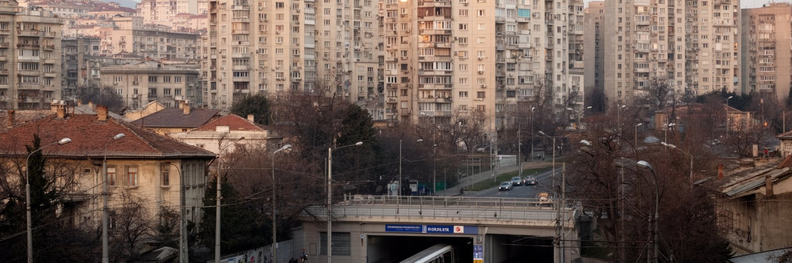
ブカレストの日常は、観光客が歩く旧市街よりも、広い集合住宅地、郊外住宅、地下鉄駅、トラム停留所、朝夕の渋滞に強く現れます。社会主義期の団地は単調に見えますが、多くの住民にとって学校、商店、公園、診療所、近所づきあいを含む生活基盤です。古い建物では断熱、エレベーター、配管、暖房、耐震性が課題になり、家計と安全に直接関わります。近年は所得上昇と不動産投資により、中心部や湖畔、北部の住宅価格が上がり、若い世帯や低賃金労働者は遠い地区へ移ることもあります。郊外の新築住宅は広さを与える一方、車依存、通勤時間、学校不足、上下水道や道路整備の遅れを生みます。地下鉄は生活を支える強い骨格ですが、駅から遠い地区ではバスや車が欠かせません。住宅を読むことは、都市の富が誰に届くかを見ることです。新しいマンションやオフィスが増えても、清掃員、教師、看護師、学生、年金生活者が住めない都市になれば、首都の機能は弱くなります。ブカレストの住宅地には、歴史より静かな形で、家族の将来、暖房費、通勤、近隣の助け合いが刻まれています。団地の中庭や小さな商店は、都市計画図では目立たないが、子ども、高齢者、移民が顔を合わせる大切な場所です。住宅政策は戸数の問題だけでなく、通学、医療、買い物、木陰まで含む生活圏の設計でなければなりません。
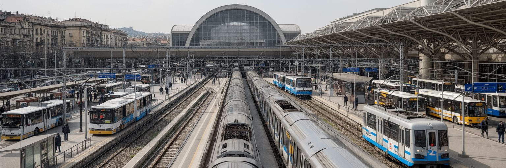
ブカレストの移動は、地下鉄、トラム、バス、トロリーバス、鉄道、タクシー、配車サービス、自家用車が重なっています。地下鉄は郊外団地と中心部を結ぶ重要な軸で、朝夕の通勤を支えます。トラムは古い大通りや住宅地に細かく入るが、軌道や車両の更新、信号優先、バリアフリーが課題になります。自動車交通は強く、広い大通りでも渋滞、駐車、排気、歩行者の横断困難が生活の質を下げます。北の空港は国際企業、観光、ディアスポラの往来を支えますが、鉄道や道路で中心部とどう結ぶかは都市全体の効率を左右します。鉄道駅は国内各地への入口であり、地方から首都へ来る人の最初の都市経験でもあります。交通を速くするだけなら道路を広げればよいように見えますが、それは歩行者、街路樹、店舗、公共空間を削ることがあります。ブカレストを交通都市として読むには、車列ではなく、ベビーカーで駅へ行く人、夜勤後にバスを待つ人、郊外から大学へ通う学生、高齢者が安全に横断できるかを見る必要があります。インフラの質は、首都の経済力だけでなく、毎日の疲労をどれだけ減らすかで評価されます。道路、地下鉄、トラムを別々に整えるだけでは足りません。乗り換えの分かりやすさ、歩道の連続性、駐輪場、夜間運行、郊外駅前の安全がつながって初めて、都市は車を持たない人にも開かれます。
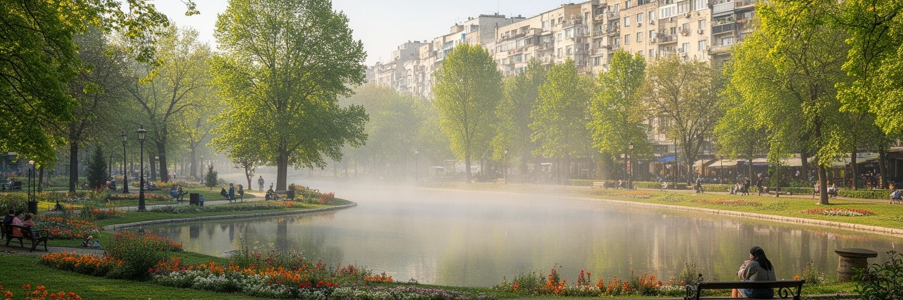
ブカレストは夏の暑さと冬の冷え込みがはっきりした都市で、近年は熱波、乾燥、豪雨、冬の霧や大気汚染が生活を左右します。ヘラストラウ湖、チシミジウ公園、カロル公園、ティネレトゥルイ公園などの緑地と水辺は、景観だけでなく、暑さを和らげ、散歩、運動、家族の時間、孤独を休ませる社会インフラです。社会主義期の団地にも中庭や緑地が残る場所があり、これを失うと生活の質は急に下がります。一方で不動産開発、違法な駐車、樹木の伐採、空地の減少は、都市の熱を強めます。冬には暖房費、古い地域暖房網、断熱不足、大気汚染が家計と健康に響きます。気候対策は、きれいな公園を増やすだけでなく、住宅改修、公共交通、雨水管理、街路樹、涼める公共施設、低所得世帯への支援と一体で考えなければなりません。ブカレストの環境を読むには、湖畔の美しさと同時に、木陰のないバス停、暑い屋外で働く人、冬に暖房を控える世帯を見る必要があります。緑地は余暇ではなく、都市が住民を守るための基盤です。公園が観光写真に写る場所だけに偏れば、郊外の暑い団地や交通量の多い道路沿いは取り残されます。気候への適応は、地区ごとの木陰、断熱、冷房、排水、医療アクセスを細かく見る公平性の問題です。季節の厳しさは、家計の弱い世帯ほど重く受け止めます。公共性の問題です。
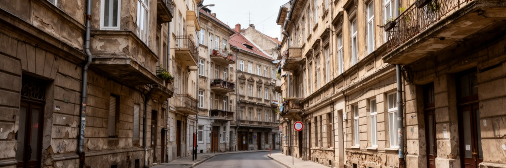
ブカレストを語る時、地震リスクは避けられません。ルーマニアのヴランチャ地震帯は首都に大きな揺れをもたらしてきた歴史があり、古い集合住宅、戦前の建物、社会主義期の高層住宅、狭い路地は安全上の課題を抱えます。歴史的建築は都市の魅力である一方、補強には費用、所有者の合意、移転、店舗営業、文化財保護が絡み、進みにくいです。危険表示のある建物に人が住み続ける背景には、家賃、所有権、代替住宅の不足、行政手続きへの不信があります。地震対策は技術の問題であると同時に、社会政策です。救急車が入れる道路、学校や病院の安全、避難場所、情報伝達、低所得世帯の支援がなければ、補強は一部の建物だけの話に留まります。観光客が古いファサードを美しいと感じる時、その壁の内側で住民がどの不安を抱えているかも考えたいものです。ブカレストの地震リスクは、都市の過去を保存するか壊すかという単純な選択ではありません。記憶を守りながら命を守るために、公共資金、専門家、住民合意、仮住まいをどう組み合わせるかが問われます。見えない備えこそ、首都の成熟度を示します。さらに、避難訓練や建物情報の公開は、専門家だけでなく住民がリスクを理解するための基礎になります。地震は一瞬の災害ですが、被害を左右するのは平時の住宅政策、道路管理、福祉、信頼です。
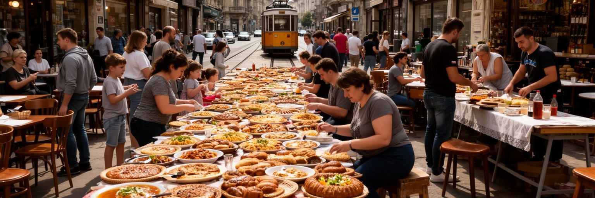
ブカレストの日常は、ミティテイ、サルマーレ、スープ、パン、チーズ、菓子、コーヒー、ワイン、ビール、近所の市場にあります。伝統料理は観光客向けの皿だけでなく、家族行事、正教会の断食期、日曜の食卓、地方から持ち込まれた味と結びつきます。市場では野菜、果物、乳製品、花、蜂蜜、保存食が並び、価格の変化は家計に直接響きます。中心部には新しいカフェ、国際料理、クラフトビール、デザイン性の高いレストランが増え、若い専門職や旅行者の消費文化を作ります。一方で、古い食堂、キオスク、団地の小さな商店は、学生、高齢者、低所得の労働者にとって重要な居場所です。飲食業は雇用を生むが、長時間労働、季節変動、チップ依存、家賃上昇に揺れやすいです。食を読むには、名物を味わうだけでなく、誰が朝に仕入れ、誰が皿を洗い、誰が安い昼食を必要としているかを見る必要があります。ブカレストの食卓は、地方とのつながり、移民、所得差、宗教暦、夜の観光を映す小さな地図です。市場と食堂が残るほど、都市は住民の時間を失わずに済みます。食の場は孤立を和らげる社会的な場所でもあります。朝のパン屋、昼の社員食堂、夕方の市場、夜の小さなバーをたどると、首都の一日は観光名所とは別のリズムで動いていることが分かります。食費の変化は、統計より早く生活の不安を知らせます。
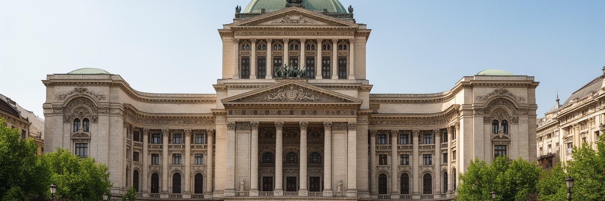
ブカレストの観光は、議会宮殿、旧市街、ルーマニア国立美術館、アテネ音楽堂、村の博物館、公園、教会、カフェ、夜の飲食街を組み合わせます。パリ風の建築、バルカン的な路地、社会主義期の大通り、現代のオフィスが短い距離で切り替わるため、都市は整った美しさよりも層の厚さで印象を残します。観光の強みは、歴史が単線ではないことにあります。王国期の優雅さ、独裁期の威圧、移行期の荒れ、EU時代の再生が同じ散歩の中で見えます。ただし観光は、都市の問題を隠すこともあります。修復されていない建物、地震リスク、貧困、騒音、ゴミ、歩行者空間の不足、夜間の過度な飲酒は、旅行者の評価だけでなく住民の生活にも関わります。遺産を守るには、有名建築の説明だけでなく、日常の商店、教会、学校、住宅の維持が必要です。ブカレストを訪れる価値は、完璧な観光都市を見ることではありません。矛盾を抱えた首都が、自分の傷と魅力をどう同時に扱うかを歩いて確かめられる点にあります。巨大宮殿と小さな教会を同じ日に見ることで、権力と生活の距離が具体的に分かります。観光案内が整うほど、説明されない場所にも目を向けたいものです。修復中の建物、団地の市場、湖畔の散歩道、地下鉄の乗り換えを歩くと、遺産は展示物ではなく都市の日常に埋め込まれていると分かります。
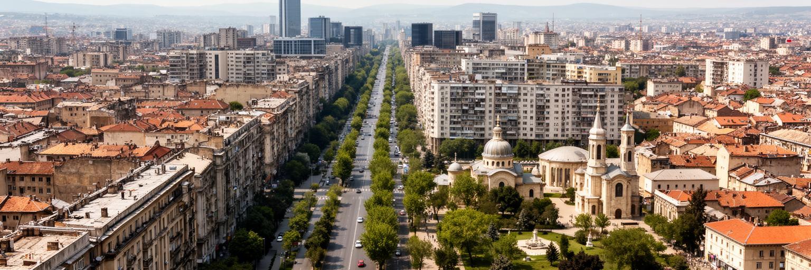
ブカレストを読むことは、壮大な首都の記号と、傷つきやすい生活の場所を重ねることです。議会宮殿と大通りは権力の記憶を見せ、旧市街は商業と観光の再生を示します。IT、金融、建設、大学は都市の富を伸ばすが、住宅費、低賃金労働、通勤、医療、地震リスク、暖房費は住民の不安を残します。正教会の暦、ユダヤ人やアルメニア人の痕跡、ロマ文化、劇場や映画は、単一の首都像をほどき、多層的な記憶を見せます。公園と湖は暑さを和らげるが、緑地の減少や古いインフラは都市の弱さを露出させます。ブカレストの重要性は、欧州東縁の政治的な位置と、急速な経済成長だけでは測れません。ここでは、社会主義期の巨大改造をどう受け止め、EU時代の成長を誰の生活へ戻し、古い建物をどう安全に残し、多様な住民をどう包むかが問われています。観光客、学生、技術者、清掃員、年金生活者、移民、祈る人が同じ都市を使います。その交差を追うと、ブカレストは美しさと混乱を抱えながら、東欧の現在を具体的に見せる首都だと分かります。評価の軸は、巨大建築の迫力や経済指標だけでは足りません。誰が公共交通に乗れ、誰が安全な住まいを得て、誰の記憶が街に残り、誰が将来をここで描けるのでしょうか。その問いを持って歩く時、首都の矛盾は都市を理解する入口になります。重要です。